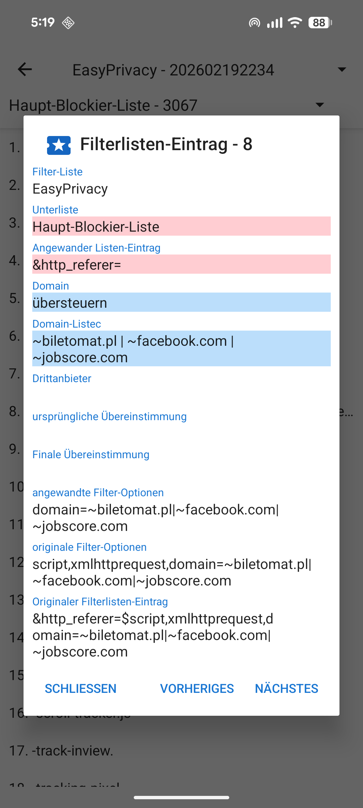
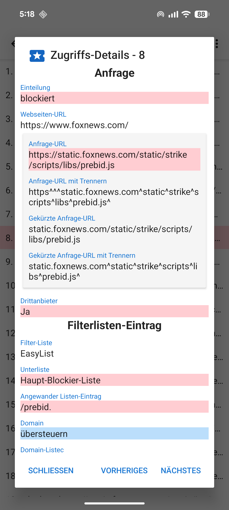

Wenn eine URL geladen wird, wird üblicherweise eine Menge Anfragen für mit der Seite verbundene Ressourcen wie Bilder, CSS-, JavaScript- und andere Dateien an den betreffenden Webserver gestellt. Details dazu können in der Ansicht "Zugriffe" betrachtet werden, welche über das Navigations-Menü links erreicht werden kann. In dieser Ansicht wird auch dargestellt, wie viele (und welche) Anfragen geblockt wurden. Durch Antippen der betreffenden Anfragen können weitere Details dazu angezeigt werden, die zeigen, warum die Anfrage erlaubt oder blockiert wurde.

Bevor eine Webseite eine Ressource lädt, wird diese in folgender Reihenfolge gegen die aktivierten Filterlisten geprüft:
Alle diese Listen mit Ausnahme der ersten basieren auf der Adblock-Syntax. UltraPrivacy und UltraList werden von Stoutner betreut. Die letzten drei Listen entstammen dem EasyList-Projekt.
Die Roh-Einträge der Filterlisten werden in 6 Unterlisten verarbeitet.
Anfangs-Domain-Listen prüfen gegen den Anfang der Domain. Diese sind sehr gebräuchlich und die Verwendung in deren Unterlisten erlaubt eine CPU-effiziente Prüfung von Ressoucren-Anfragen. Listen regulärer Eindrücke folgen der Syntax regulärer Eindrücke.
Die Inhalte der Filterlisten können durch Auswahl von Filter-Listen im Options-Menü (drei Punkte in der oberen rechten Ecke) der Anfragen-Anzeige begutachtet werden.

Aufrgrund der Einschränkungen in Androids WebView nutzt Privacy Browser eine vereinfachte Implementierung der Adblock-Syntax. Eine detailiertere Beschreibung, wie die Filterlisten-Einträge verarbeitet werden, ist unter stoutner.com verfügbar.